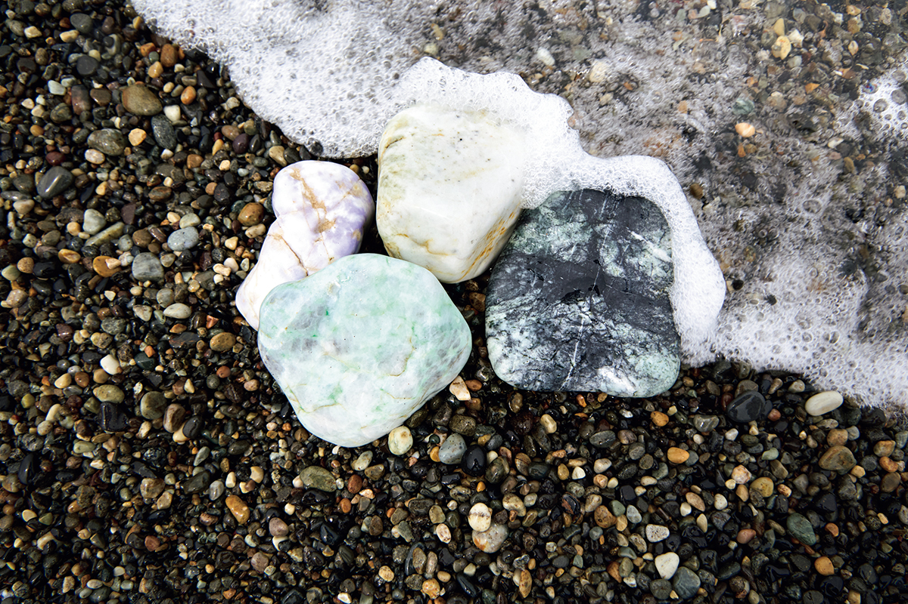
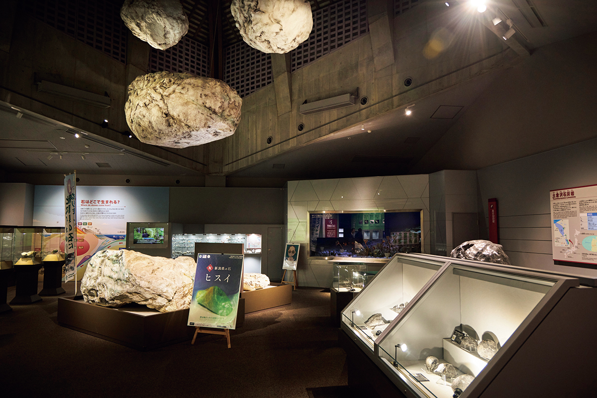
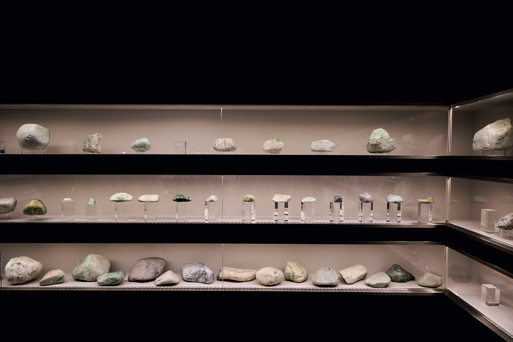
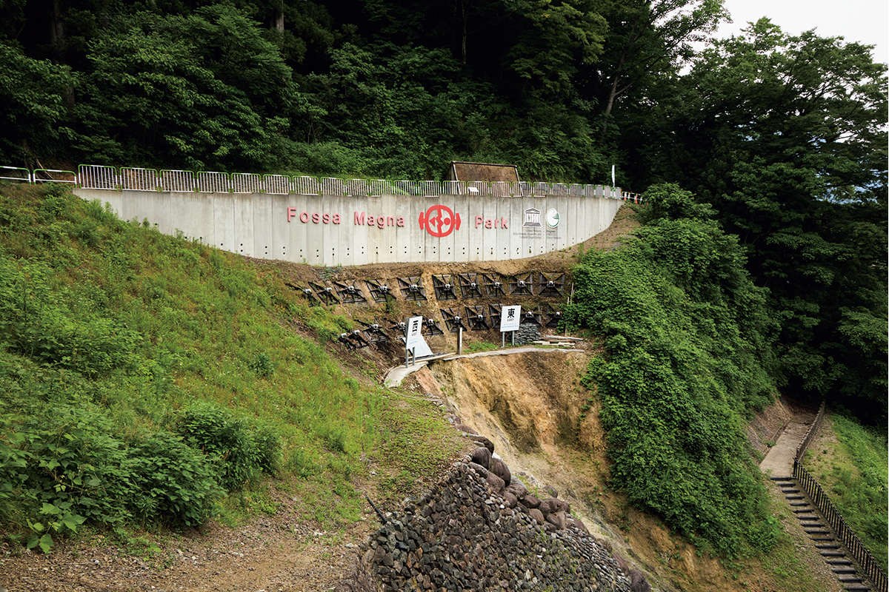
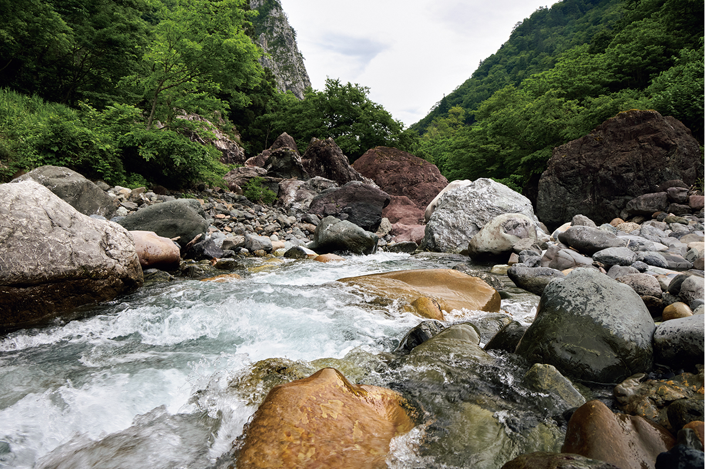
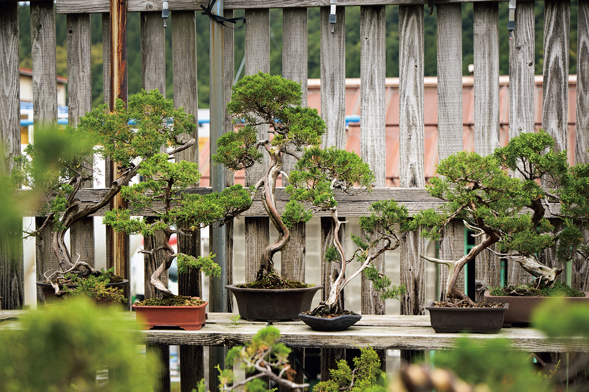
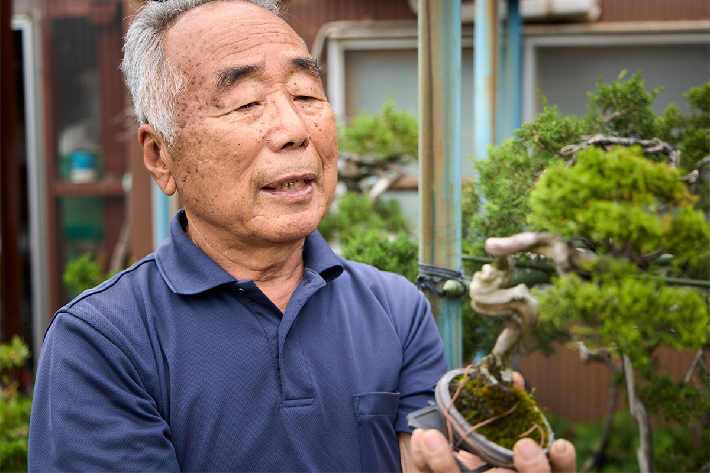
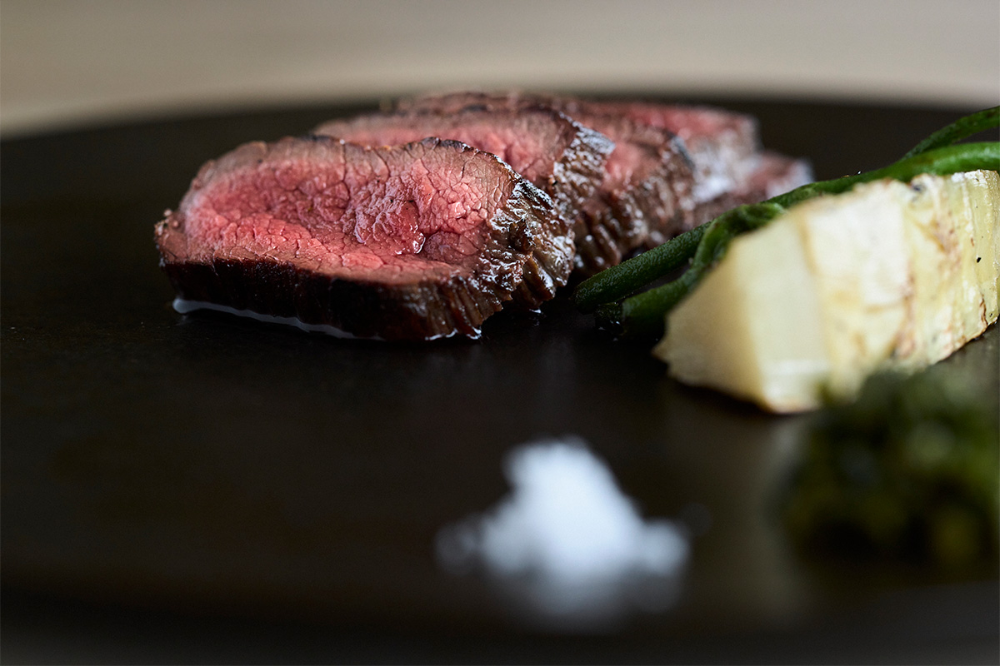
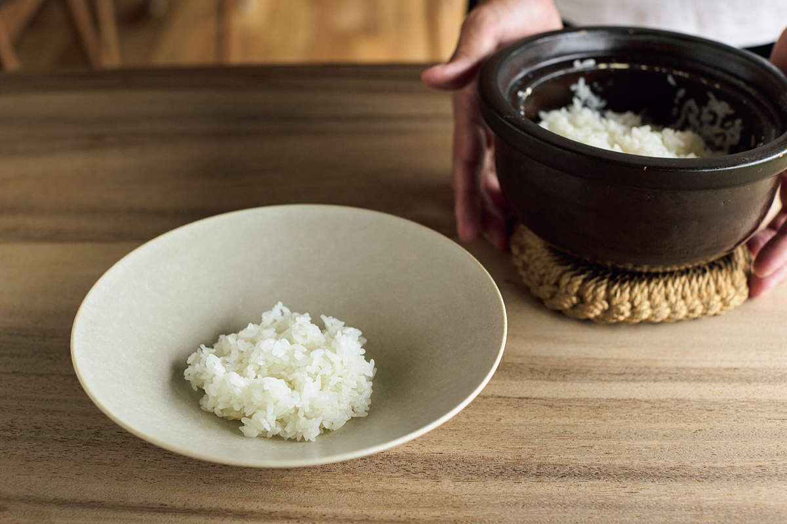
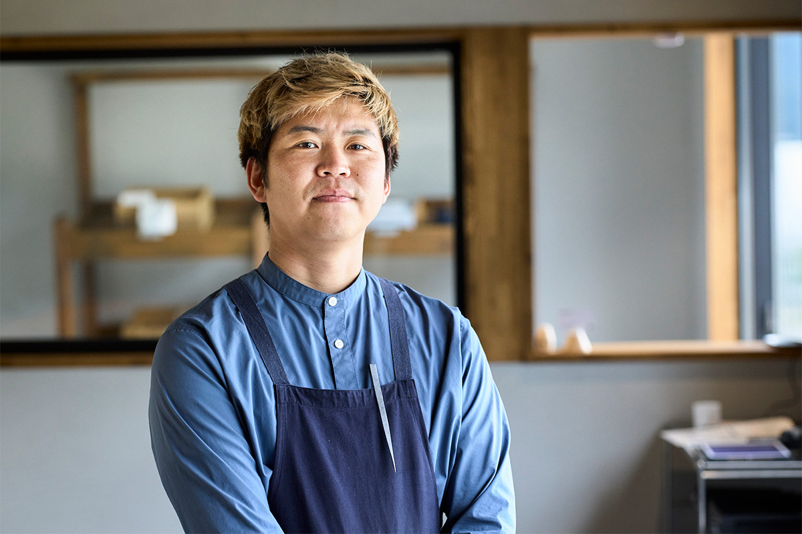

Префектура Ниигата · Итоигава · природа
Итоигава: разлом Фосса Магна, жадеитовое ущелье и поиски камней на берегу Японского моря

Итоигава первой в Японии вошла в число глобальных геопарков ЮНЕСКО. Здесь можно увидеть разлом, который делит страну пополам, потрогать жадеитовые глыбы в горном ущелье и поискать собственный камень на берегу моря.
Геология
Универмаг камней
Итоигава лежит на самом западе префектуры Ниигата, и её называют «универмагом геологии»: здесь собраны ключи к тому, как появились Японские острова. Главное слово для всякого, кто сюда едет, это Фосса Магна. Так называют огромный разлом, который образовался около 16 миллионов лет назад, когда будущие Японские острова отделялись от Азиатского материка.
На стыке моря и суши здесь проходят разломы, а в земле встречается жадеит, один из древнейших в мире. Камни, которые находят в округе, охватывают возраст от примерно 500 миллионов лет до наших дней, и мест с таким разнообразием на планете немного.
Музей
С чего начать: музей «Фосса Магна»
Начать поездку лучше с музея «Фосса Магна». Здесь собрано около 700 образцов жадеита, найденного в пределах города, минералы со всего мира и древние окаменелости, а история разлома и рождения Японских островов рассказана так, что её можно потрогать и рассмотреть.

В шести залах показывают жадеит Итоигавы, камни и окаменелости из Японии и других стран, а историю рождения архипелага объясняют в основном картинками. По выходным здесь определяют камни. В экспозиции есть и ляпис-лазурь из Итоигавы: впервые в Японии её нашли именно здесь, и эта находка удивила весь мир.

Музей «Фосса Магна»
- Адрес
- префектура Ниигата, Итоигава, Итиномия, 1313
- Телефон
- +81 25-553-1880
- Часы работы
- 9:00–17:00 (вход до 16:30)
- Выходные
- с декабря по февраль понедельник и день после праздника, новогодние дни
- Цены / Вход
- взрослые 700 иен, школьники и студенты 300 иен
Разлом
Парк «Фосса Магна»: граница, которую видно
Историю камней и земли понимаешь гораздо лучше, когда стоишь там, где она произошла. В парке «Фосса Магна» на поверхность выходит разлом Итоигава-Сидзуока, который делит геологию Японии на восток и запад. Это один из главных музеев под открытым небом геопарка Итоигава: здесь видно, как вплотную сходятся породы возрастом около 16 миллионов лет и около 270 миллионов лет.

Парк «Фосса Магна»
- Адрес
- префектура Ниигата, Итоигава, Нэгоя, 2484-1
- Телефон
- +81 25-553-1880
- Даты
- примерно с конца апреля до конца ноября, зимой закрыт
Ущелье
Котаки: жадеит в природе
Жадеитовое ущелье на реке Котаки спрятано в горах. Здесь можно прикоснуться к огромным глыбам жадеита, лежащим прямо в русле. Котаки впадает в реку Химэ, и именно там, где к Котаки обрывается скальная стена горы Мёдзё, впервые в Японии нашли жадеит. Это самое известное в стране место залегания жадеита и природный памятник государственного значения. Камни, отполированные чистой водой, сливаются с красотой ущелья, и смотреть на это можно долго.

Жадеитовое ущелье Котаки
- Адрес
- префектура Ниигата, Итоигава, Котаки
- Телефон
- +81 25-555-7344 (туристический информационный центр Итоигавы)
- Даты
- примерно с конца апреля до начала ноября, зимой закрыто
- Цены / Вход
- выносить камни нельзя
Берег
Жадеитовый берег: поиск сокровищ
Искать свой камень на жадеитовом берегу, когда рядом шумит изумрудно-зелёное море, можно только здесь. Песка на этом редком побережье нет: всё усыпано галькой и мелкими камнями. Они родились в горах Итоигавы и спустились к морю по рекам, в том числе через ущелье Котаки, а волны выбросили их на берег. Среди них попадаются жадеит, агат и корунд (так в необработанном виде называют рубины и сапфиры).
Жадеитовый берег
- Адрес
- префектура Ниигата, Итоигава, Осиагэ
- Телефон
- +81 25-555-7344 (туристический информационный центр Итоигавы)
Бонсай
«Катаока Гардэн»: можжевельник Итоигавы
Природа Итоигавы дала не только камни. Здесь растёт свой вечнозелёный можжевельник, итоигава-синпаку, которого называют «королём бонсай». В садовом питомнике «Катаока Гардэн» им занимаются профессионально: здесь собраны итоигава-синпаку и дикие горные травы, от черенков и взрослых деревьев до старых экземпляров возрастом 500 лет.

В питомнике можно и самому сделать бонсай из итоигава-синпаку. Хозяин питомника подробно объясняет, как выбрать дерево, как оплести ветви проволокой и как их обрезать, так что справится и новичок. Готовый бонсай вы увезёте с собой. Мастер-класс стоил 3000 иен плюс цена самого дерева в 2026 году.

«Итоигава-синпаку растёт в суровых условиях, поэтому он крепкий, с хорошей хвоей и особенной красотой»
хозяин питомника
«Катаока Гардэн»
- Адрес
- префектура Ниигата, Итоигава, Оно, 421-1
- Телефон
- +81 25-552-7814
- Часы работы
- 8:00–17:00
- Выходные
- нерегулярно
- Цены / Вход
- мастер-класс по бонсай из итоигава-синпаку 3000 иен плюс цена дерева
Ресторан
mûrir: ужин из продуктов округи
Итоигава интересна и разнообразием кухни. Ресторан mûrir принадлежит местной ферме и стоит среди полей. Шеф учился французской кухне и испанской готовке на дровах там, где они родились. Его девиз: «Продукты не должны путешествовать». Из продуктов Итоигавы он собирает сет из 13 блюд, который хвалят даже самые придирчивые гурманы.

«В радиусе 30 километров у нас горы высотой около 2500 метров и морское дно на глубине 1500 метров. Такой перепад высот и даёт разнообразные продукты с сильным вкусом»
шеф ресторана mûrir
Многое на кухню привозят местные производители, которых шеф знает в лицо, а рис «Хисуй-но сидзуку» сорта косихикари ферма выращивает сама. Продукты жарят на дровах в камине, и в каждом блюде собран вкус здешней земли.


mûrir
- Адрес
- префектура Ниигата, Итоигава, Токай, 79-1
- Телефон
- +81 80-2679-4399 (бронь не позднее чем за 2 дня)
- Часы работы
- обед с 12:00 для всех гостей одновременно (суббота, воскресенье и праздники), ужин с 18:00 для всех гостей одновременно
- Выходные
- вторник, среда, четверг
- Сайт
- murirniigata.com
Фото: Кэндзи Окадзаки.